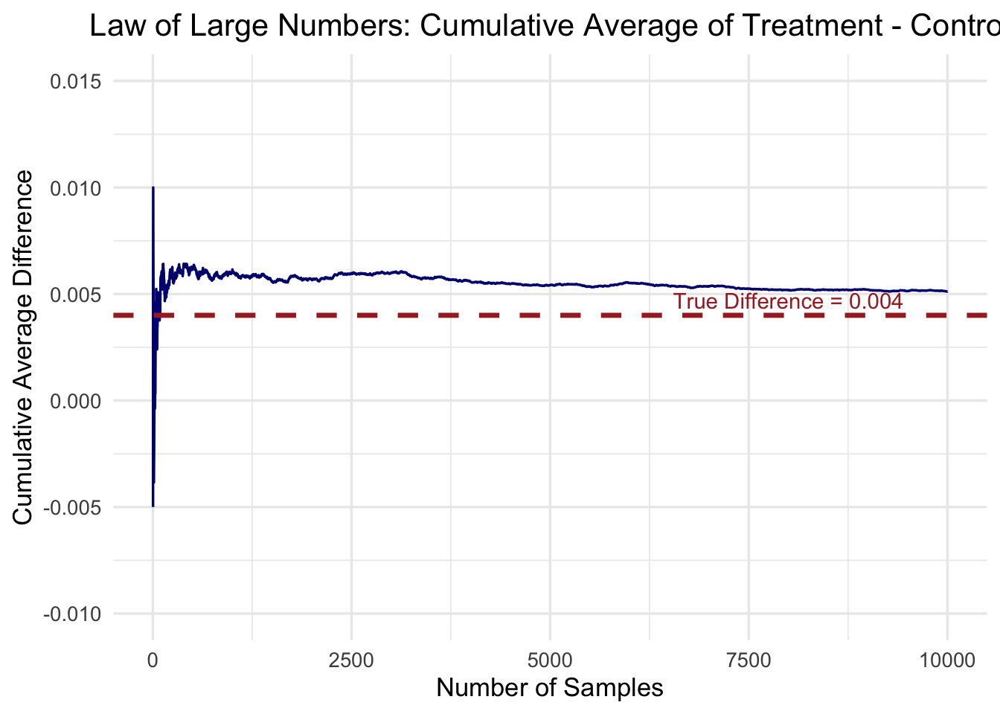

Dean Karlan at Yale and John List at the University of Chicago conducted a field experiment to test the effectiveness of different fundraising letters. They sent out 50,000 fundraising letters to potential donors, randomly assigning each letter to one of three treatments: a standard letter, a matching grant letter, or a challenge grant letter. They published the results of this experiment in the American Economic Review in 2007. The article and supporting data are available from the AEA website and from Innovations for Poverty Action as part of Harvard’s Dataverse.
Specifically, they tested the impact of matching grants—where a donor’s contribution would be matched by a lead donor at varying ratios (1:1, 2:1, or 3:1)—on both the likelihood of giving and the donation amount. In total, 50,083 fundraising letters were sent to past donors of a political civil liberties organization, with individuals randomly assigned to treatment or control conditions.
This project seeks to replicate their results.
Data
Description
library(haven) # For reading .dta fileslibrary(dplyr) # For data manipulation
Attaching package: 'dplyr'
The following objects are masked from 'package:stats':
filter, lag
The following objects are masked from 'package:base':
intersect, setdiff, setequal, union
library(ggplot2) # For visualizationsdf <-read_dta("./karlan_list_2007.dta")
The dataset contains 50,083 observations and 51 variables, capturing individual-level information from a fundraising experiment involving charitable donations. Each row represents a respondent who received a fundraising letter, and the columns detail various aspects of the treatment they received
Variable Definitions
Variable
Description
treatment
Treatment
control
Control
ratio
Match ratio
ratio2
2:1 match ratio
ratio3
3:1 match ratio
size
Match threshold
size25
$25,000 match threshold
size50
$50,000 match threshold
size100
$100,000 match threshold
sizeno
Unstated match threshold
ask
Suggested donation amount
askd1
Suggested donation was highest previous contribution
askd2
Suggested donation was 1.25 x highest previous contribution
askd3
Suggested donation was 1.50 x highest previous contribution
ask1
Highest previous contribution (for suggestion)
ask2
1.25 x highest previous contribution (for suggestion)
ask3
1.50 x highest previous contribution (for suggestion)
amount
Dollars given
gave
Gave anything
amountchange
Change in amount given
hpa
Highest previous contribution
ltmedmra
Small prior donor: last gift was less than median $35
freq
Number of prior donations
years
Number of years since initial donation
year5
At least 5 years since initial donation
mrm2
Number of months since last donation
dormant
Already donated in 2005
female
Female
couple
Couple
state50one
State tag: 1 for one observation of each of 50 states; 0 otherwise
nonlit
Nonlitigation
cases
Court cases from state in 2004-5 in which organization was involved
statecnt
Percent of sample from state
stateresponse
Proportion of sample from the state who gave
stateresponset
Proportion of treated sample from the state who gave
stateresponsec
Proportion of control sample from the state who gave
stateresponsetminc
stateresponset - stateresponsec
perbush
State vote share for Bush
close25
State vote share for Bush between 47.5% and 52.5%
red0
Red state
blue0
Blue state
redcty
Red county
bluecty
Blue county
pwhite
Proportion white within zip code
pblack
Proportion black within zip code
page18_39
Proportion age 18-39 within zip code
ave_hh_sz
Average household size within zip code
median_hhincome
Median household income within zip code
powner
Proportion house owner within zip code
psch_atlstba
Proportion who finished college within zip code
pop_propurban
Proportion of population urban within zip code
Balance Test
As an ad hoc test of the randomization mechanism, I provide a series of tests that compare aspects of the treatment and control groups to assess whether they are statistically significantly different from one another.
— T-test: Did treatment affect donation probability? —
t_gave <-t.test(gave ~ treatment, data = df)cat("T-test result:\n")
T-test result:
print(t_gave)
Welch Two Sample t-test
data: gave by treatment
t = -3.2095, df = 36577, p-value = 0.001331
alternative hypothesis: true difference in means between group 0 and group 1 is not equal to 0
95 percent confidence interval:
-0.006733310 -0.001627399
sample estimates:
mean in group 0 mean in group 1
0.01785821 0.02203857
— Linear Regression: Bivariate (treatment -> gave) —
reg_gave <-lm(gave ~ treatment, data = df)reg_summary <-tidy(reg_gave)cat("\nLinear regression result:\n")
Both the two-sample t-test and the bivariate linear regression provide consistent evidence that assignment to the treatment group significantly increased the likelihood of making a donation. The treatment group had a slightly higher donation rate compared to the control group, and the difference is statistically significant — meaning it is very unlikely to have occurred by random chance.
The regression result shows a positive and significant coefficient for the treatment variable, confirming that individuals who received a matched donation appeal were more likely to give. Although the increase in donation rate is relatively small in magnitude, it is highly statistically significant, suggesting that even subtle nudges — like the promise of a matching donation — can meaningfully influence charitable behavior at scale.
df <- df %>%mutate(gave =as.integer(gave),treatment =as.integer(treatment) )probit_model <-glm(gave ~ treatment, data = df, family =binomial(link ="probit"))mfx <-margins(probit_model)summary(mfx)
factor AME SE z p lower upper
treatment 0.0043 0.0014 3.1044 0.0019 0.0016 0.0070
The result replicate the Table 3 column 1 in the paper
Differences between Match Rates
Next, I assess the effectiveness of different sizes of matched donations on the response rate.
<labelled<double>[3]>: Match ratio
[1] 1 2 3
Labels:
value label
0 Control
treat_only <- treat_only %>%mutate(match_ratio =as.numeric(as.character(ratio))) # 1, 2, or 3test_1v2 <-t.test(gave ~ match_ratio, data = treat_only %>%filter(match_ratio %in%c(1, 2)))test_1v3 <-t.test(gave ~ match_ratio, data = treat_only %>%filter(match_ratio %in%c(1, 3)))test_2v3 <-t.test(gave ~ match_ratio, data = treat_only %>%filter(match_ratio %in%c(2, 3)))cat("\nT-test: 1:1 vs 2:1 match ratio\n")
T-test: 1:1 vs 2:1 match ratio
print(test_1v2)
Welch Two Sample t-test
data: gave by match_ratio
t = -0.96505, df = 22225, p-value = 0.3345
alternative hypothesis: true difference in means between group 1 and group 2 is not equal to 0
95 percent confidence interval:
-0.005711275 0.001942773
sample estimates:
mean in group 1 mean in group 2
0.02074912 0.02263338
cat("\nT-test: 1:1 vs 3:1 match ratio\n")
T-test: 1:1 vs 3:1 match ratio
print(test_1v3)
Welch Two Sample t-test
data: gave by match_ratio
t = -1.015, df = 22215, p-value = 0.3101
alternative hypothesis: true difference in means between group 1 and group 3 is not equal to 0
95 percent confidence interval:
-0.005816051 0.001847501
sample estimates:
mean in group 1 mean in group 3
0.02074912 0.02273340
cat("\nT-test: 2:1 vs 3:1 match ratio\n")
T-test: 2:1 vs 3:1 match ratio
print(test_2v3)
Welch Two Sample t-test
data: gave by match_ratio
t = -0.050116, df = 22261, p-value = 0.96
alternative hypothesis: true difference in means between group 2 and group 3 is not equal to 0
95 percent confidence interval:
-0.004012044 0.003811996
sample estimates:
mean in group 2 mean in group 3
0.02263338 0.02273340
Interpretation: None of the differences in donation rates between groups were statistically significant at the 5% level. Although donation rates were slightly higher under the 2:1 and 3:1 matches, the differences were very small (on the order of ~0.2 percentage points) and likely due to random chance.The results confirm the authors’ conclusion that higher match ratios did not significantly impact donation behavior, and that threshold size did not seem to moderate this relationship. The motivational power of matching gifts seems to come from the existence of a match—not from its specific terms.
Interpretation: The regression results show that the baseline donation rate under a 1:1 match (the intercept) is approximately 2.07%. Compared to this baseline, offering a 2:1 or 3:1 match increases the donation rate by only 0.19 percentage points, and these effects are not statistically significant (p-values = 0.338 and 0.313). This means we cannot confidently say that higher match ratios (2:1 or 3:1) lead to higher giving rates than the standard 1:1 match. These results support the authors’ claim that while larger match ratios may look more generous, they do not significantly increase response rates.
Group-level means (already filtered to treatment group earlier)
Interpretation:Both the direct calculation from the data and the regression coefficients show that increasing the match ratio has only a very small effect on the likelihood of donating: - Moving from 1:1 to 2:1 increases the response rate by only 0.00188 (0.188 percentage points) - Moving from 2:1 to 3:1 increases it by just 0.00010 (0.01 percentage points) These changes are extremely small and not statistically significant based on your earlier t-tests and regression results.
Size of Charitable Contribution
In this subsection, I analyze the effect of the size of matched donation on the size of the charitable contribution.
reg_amount <-lm(amount ~ treatment, data = df)reg_summary <-tidy(reg_amount)print(reg_summary)
Interpretation: The regression suggests that offering a matching donation increases average donation revenue by around $0.15, but this effect is not statistically significant at the 5% level (p = 0.063), indicating that the match offer may boost participation more than it increases the amount donated.
Interpretation: Among individuals who chose to donate, the treatment group gave $1.67 less on average than the control group, though this difference is not statistically significant (p = 0.561). This indicates that while matching offers increase the likelihood of donating, they do not appear to influence the size of contributions among those who give. Because this regression conditions on donation (a post-treatment outcome), the treatment coefficient does not have a clear causal interpretation.
Warning: Using `size` aesthetic for lines was deprecated in ggplot2 3.4.0.
ℹ Please use `linewidth` instead.
Simulation Experiment
As a reminder of how the t-statistic “works,” in this section I use simulation to demonstrate the Law of Large Numbers and the Central Limit Theorem.
Suppose the true distribution of respondents who do not get a charitable donation match is Bernoulli with probability p=0.018 that a donation is made.
Further suppose that the true distribution of respondents who do get a charitable donation match of any size is Bernoulli with probability p=0.022 that a donation is made.
Law of Large Numbers
set.seed(42)control_draws <-rbinom(100000, size =1, prob =0.018)treatment_draws <-rbinom(10000, size =1, prob =0.022)diffs <-replicate(10000, {mean(sample(treatment_draws, 100, replace =TRUE)) -mean(sample(control_draws, 100, replace =TRUE))})cumulative_avg <-cumsum(diffs) /seq_along(diffs)df <-data.frame(Sample =1:10000, CumulativeAvg = cumulative_avg)library(ggplot2)ggplot(df, aes(x = Sample, y = CumulativeAvg)) +geom_line(color ="navy", linewidth =0.6) +geom_hline(yintercept =0.004, color ="brown", linetype ="dashed", linewidth =1.2) +annotate("text", x =8000, y =0.0047, label ="True Difference = 0.004", color ="brown") +scale_y_continuous(limits =c(-0.01, 0.015)) +# zoom in Y rangelabs(title ="Law of Large Numbers: Cumulative Average of Treatment - Control",x ="Number of Samples",y ="Cumulative Average Difference" ) +theme_minimal(base_size =13) +theme(plot.title =element_text(hjust =0.5))
Warning: Removed 1 row containing missing values or values outside the scale range
(`geom_line()`).

Interpretation: The cumulative average clearly approaches the true difference in means. In the early stages of the simulation, the average difference fluctuates significantly due to randomness in small sample sizes. However, as the number of samples increases, the fluctuations decrease and the cumulative average stabilizes close to the true value of 0.004. This convergence illustrates the Law of Large Numbers, which states that as the sample size grows, the sample mean tends to converge to the population mean.
Interpretation: These histograms illustrate the Central Limit Theorem by showing that as sample size increases, the sampling distribution of the difference in means becomes more symmetric and bell-shaped, even though the underlying data is binary. At smaller sample sizes (e.g., 50 or 200), the distributions are wide and irregular, and the null value of zero lies near the center, indicating high uncertainty and weak evidence against the null. As the sample size grows to 500 and 1000, the distributions tighten around the true effect (0.004), yet zero still remains within or close to the central mass of the distribution..